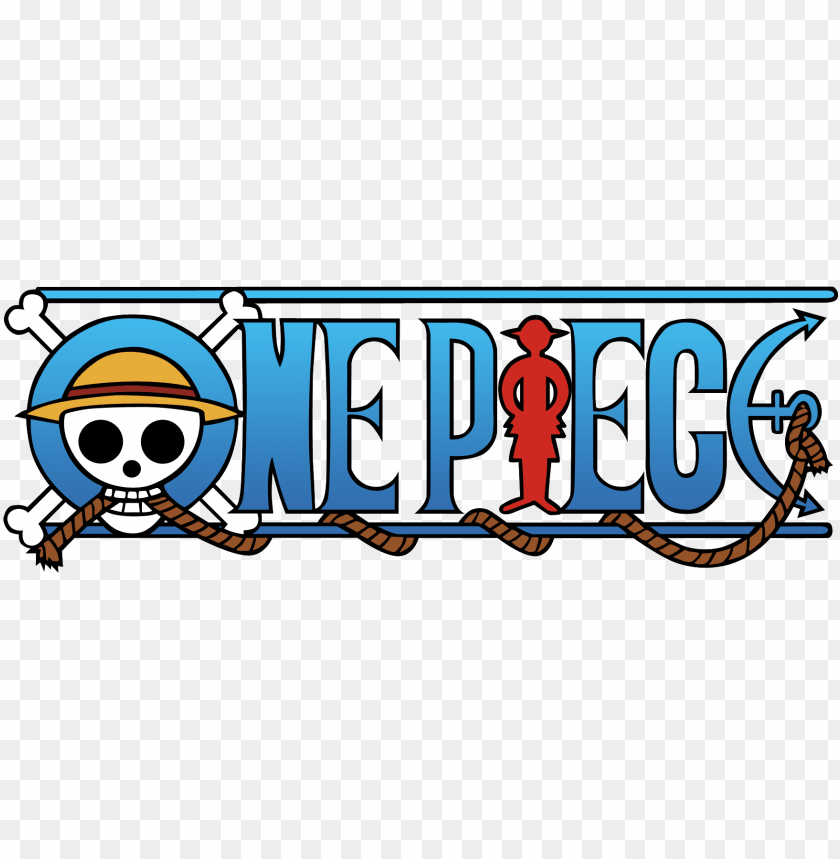

| Logo | Manga | Auteur | Date de parution | Exemplaires vendus | Dernier tome | Synopsis |
|  | One Piece | Eiichirō Oda | 22 juillet 1997 | 490 millions | | Cliquez ici |
 | My Hero Academia | Kōhei Horikoshi | 7 juillet 2014 | 50 millions | | Cliquez ici |
 | L'Attaque des Titans | Hajime Isayama | 9 septembre 2009 | 100 millions | | Cliquez ici |
| One Punch Man | Yūsuke Murata | 14 juin 2012 | 30 millions | | Cliquez ici |
| Dragon Ball | Akira Toriyama | 20 novembre 1984 | 260 millions | | Cliquez ici |
| One Piece | Eiichirō Oda | 24 décembre 1997 | 490 millions |  | Cliquez ici |
 | One Piece | Eiichirō Oda | 24 décembre 1997 | 490 millions | | Cliquez ici |
| One Piece | Eiichirō Oda | 24 décembre 1997 | 490 millions | | Cliquez ici |
| Fairy Tail | Hiro Mashima | 2 août 2006 | 72 millions | | Cliquez ici |
| One Piece | Eiichirō Oda | 24 décembre 1997 | 490 millions | | Cliquez ici |
| Logo | Manga | Auteur | Date de parution | Exemplaires vendus | Dernier tome | Synopsis |